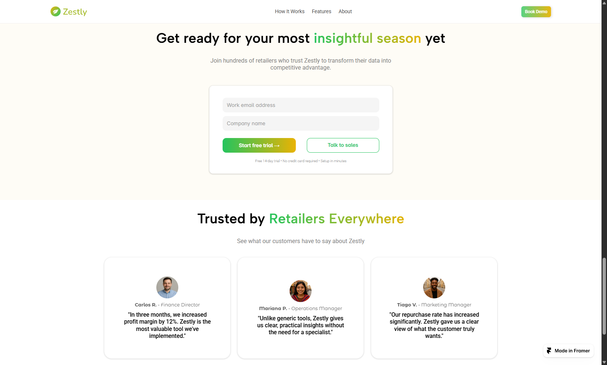

Comunicar a proposta de valor
Apresentar uma solução baseada em dados de maneira acessível, destacando seus benefícios para o planejamento e a gestão do varejo sazonal.
Transformando dados do varejo em decisões inteligentes — uma landing page para apresentar uma solução de inteligência de dados e gerar oportunidades comerciais.

A Zestly é uma solução de inteligência de dados que ajuda varejistas a se prepararem para períodos de alta demanda. A plataforma reúne informações de inventário, e-commerce e sistemas de armazém, transformando dados dispersos em insights claros e acionáveis.
Com isso, as equipes podem identificar padrões, compreender a demanda dos consumidores e tomar decisões mais estratégicas durante as temporadas de vendas.

O varejo sazonal exige planejamento, organização e decisões rápidas. A página precisava explicar como a Zestly transforma dados operacionais em próximos passos, sem sobrecarregar o visitante com informações técnicas, e ainda incentivar o agendamento de uma demonstração.
Apresentar uma solução baseada em dados de maneira acessível, destacando seus benefícios para o planejamento e a gestão do varejo sazonal.
Estruturar o conteúdo de forma progressiva, conectando os problemas do público às funcionalidades e aos benefícios da plataforma.
Criar uma jornada clara, com chamadas para ação que estimulem o agendamento de demonstrações.
O processo começou pela análise de referências visuais e pela organização da estrutura da página. Em seguida, desenvolvi a interface, equilibrando clareza da informação, identidade visual e foco em conversão.
Analisei páginas de empresas como Be Farm Ecological, BFarm e With My Own Two Hands, observando a organização do conteúdo e a apresentação de soluções para o segmento agrícola e de varejo.
Organizei a hierarquia das informações, a distribuição das seções, os espaços para elementos da plataforma e as chamadas para ação. A estrutura evoluiu durante a prototipação.
Combinei referências fornecidas para o projeto com tons associados ao outono e às temporadas de colheita, conectando tecnologia, varejo e sazonalidade.
Desenvolvi uma página que apresenta a proposta, ilustra a plataforma e explica seu funcionamento e benefícios, levando o visitante ao agendamento de uma demonstração.
A identidade visual combina modernidade e clareza com referências ao contexto agrícola e sazonal. Cores e famílias tipográficas ajudam a diferenciar títulos, textos de apoio e elementos da interface.
AaBbCc 123
AaBbCc 123
AaBbCc 123
A página conduz o visitante da compreensão do problema à descoberta dos benefícios da plataforma. A hierarquia visual e as chamadas para ação aproximam a apresentação da solução do objetivo de agendar uma demonstração.

Uma campanha de outono mostra como os insights da Zestly ajudam varejistas a antecipar a demanda e preparar o estoque para os períodos de maior movimento.

O formulário de teste gratuito e os depoimentos de clientes reforçam a credibilidade da solução e convidam o visitante a conhecer a plataforma.
O projeto resultou em uma landing page com estrutura organizada, identidade visual própria e uma jornada pensada para tornar a solução compreensível e incentivar potenciais clientes a avançarem para uma demonstração.
Informações organizadas para apresentar a solução e seus benefícios ao público B2B.
Cores, tipografia e elementos gráficos alinhados ao contexto agrícola e tecnológico.
Conteúdo e chamadas para ação distribuídos para conduzir ao agendamento de demonstração.
Elementos gráficos aproximam o visitante da plataforma e facilitam a compreensão da solução.
O processo reforçou como estratégia, estrutura e linguagem visual trabalham juntas para tornar uma solução mais clara e relevante.
A análise de outras páginas ajudou a encontrar caminhos visuais; o desafio foi construir uma experiência coerente com a proposta específica da Zestly.
O wireframe organizou as informações antes da interface. As adaptações durante a prototipação reforçaram a importância de revisar a estrutura ao longo do projeto.
Cores e tipografias ajudaram a equilibrar tecnologia, legibilidade e referências ao universo agrícola.
A organização dos conteúdos e das chamadas para ação conecta a apresentação da solução ao objetivo de gerar oportunidades comerciais.